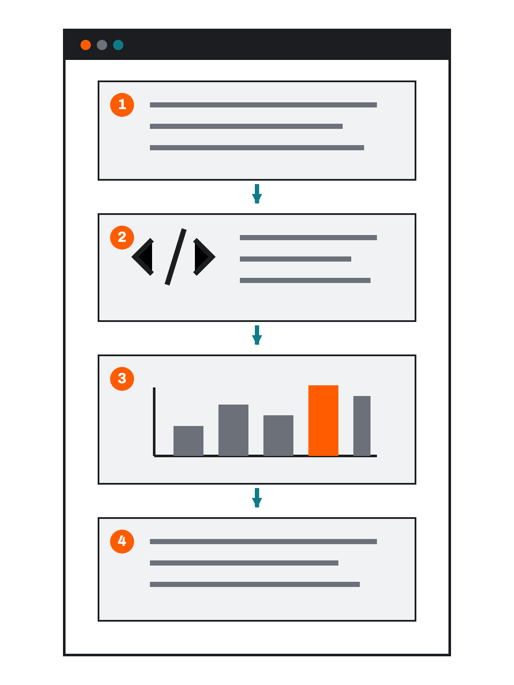
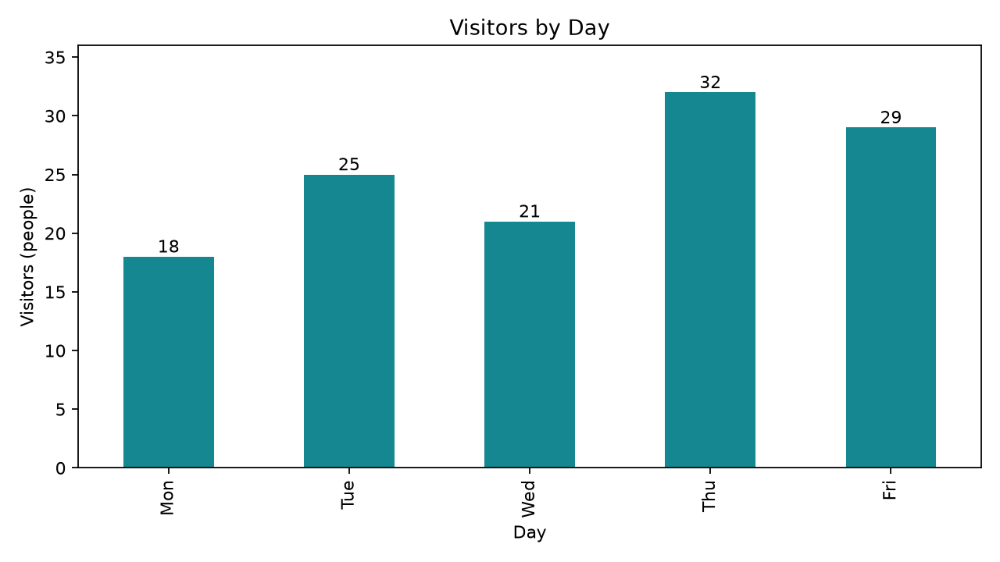

pandas로 표 데이터를 쉽게 사용하기 用 pandas 更轻松地处理表格数据
pandas는 표를 다루고 DataFrame은 표를 담는다 pandas 处理表格，DataFrame 保存表格
import pandas as pd
pandas는 Python에서 행과 열로 된 표를 읽고 확인하고 정리하는 라이브러리입니다. pd는 긴 이름을 짧게 부르는 별명입니다. pandas 是在 Python 中读取、确认与整理行列表格的库，pd 是它的简写别名。
| 낱말 术语 | 역할 作用 |
|---|---|
| pandas | 표 데이터를 다루는 도구 处理表格数据的工具 |
| DataFrame | pandas 안에서 실제 데이터를 담는 행·열 표 在 pandas 中保存实际数据的行列表格 |
pandas는 데이터를 대신 판단하는 AI가 아닙니다. 어떤 데이터와 열을 사용할지는 사람이 정합니다. pandas 不是替人判断数据的 AI；使用哪些数据与列仍由人决定。
dict의 이름과 값이 DataFrame의 열이 된다 dict 的名称和值成为 DataFrame 的列
data = {
"day": ["Mon", "Tue", "Wed", "Thu", "Fri"],
"visitors": [18, 25, 21, 32, 29],
}
df = pd.DataFrame(data)
print(df)
| day day | visitors visitors |
|---|---|
| Mon | 18 |
| Tue | 25 |
| Wed | 21 |
| Thu | 32 |
| Fri | 29 |
dict에서 각 이름이 열 이름이 되고, 같은 위치의 값들이 한 행으로 짝지어집니다. dict 中的名称成为列名，相同位置的值配成同一行。
AI 코드에서 표의 모양과 열을 확인한다 在 AI 代码中确认表格形状与列
print(df.head()) print(df.columns) print(df["visitors"].max())
| 코드 代码 | 확인하는 것 确认内容 |
|---|---|
df.head()
|
표의 앞부분이 예상한 모양인지 表格前几行是否符合预期 |
df.columns
|
열 이름이 무엇인지 列名是什么 |
df["visitors"].max()
|
이용 인원의 최댓값 访客数最大值 |
함수 이름을 외우거나 처음부터 작성할 필요는 없습니다. AI가 올바른 열을 사용했는지와 출력이 원본과 맞는지 확인합니다. 无需背函数名或从头编写；要确认 AI 使用了正确的列，输出与原始数据一致。
열 이름으로 표와 그래프를 연결한다 用列名把表格与图表连接起来
df.plot(
x="day",
y="visitors",
kind="bar",
legend=False,
)
| 설정 设置 | 뜻 含义 |
|---|---|
x="day"
|
가로축에 day 열 사용 横轴使用 day 列 |
y="visitors"
|
세로축에 visitors 열 사용 纵轴使用 visitors 列 |
kind="bar"
|
막대그래프 柱状图 |
Matplotlib을 사용하지 않는다는 뜻이 아닙니다. pandas가 DataFrame의 열과 그래프를 더 짧게 연결해 줍니다. 这并不表示没有使用 Matplotlib；pandas 只是更简短地连接 DataFrame 的列与图表。
표 확인과 그래프 완성을 한 요청에 담는다 一次请求中同时说明表格确认与图表完成 실습 实践
pandas로 요일과 이용 인원을 DataFrame으로 만들고, 표의 앞부분과 최댓값을 출력한 뒤 막대그래프를 그려 줘. 요일: Mon, Tue, Wed, Thu, Fri 이용 인원: 18, 25, 21, 32, 29 - x축은 day 열, y축은 visitors 열 - 세로축은 0에서 시작 - 제목과 축 이름 표시 - 원본 데이터는 바꾸지 않기 - 복잡한 기능은 사용하지 않기

sample/notebooks/04-2_pandas_table.ipynb를 열고 준비된 셀을 위에서 아래로 실행합니다. dict → DataFrame → 그래프로 이어지는 결과를 확인합니다.打开 04-2_pandas_table.ipynb 并从上到下运行单元，确认 dict → DataFrame → 图表的连接。
행·열·값·그래프를 차례로 원본과 비교한다 依次把行、列、值与图表和原始数据核对

day와 visitors 열이 그래프의 두 축으로 연결됩니다.DataFrame 的 day 与 visitors 列连接到图表两轴。- DataFrame의 행 수와 열 이름이 원본과 같은가? DataFrame 的行数与列名与原始数据一致吗？
- 요일과 이용 인원이 같은 행에 짝지어졌는가? 星期与访客数是否在同一行配对？
- 최댓값이 32로 나타나는가? 最大值是否为 32？
- 그래프가 day와 visitors 열을 사용했는가? 图表是否使用 day 与 visitors 列？
- 막대 수와 높이가 원본과 같은가? 柱子数量与高度是否和原始数据一致？
- 제목·축·단위·축 시작점이 조건에 맞는가? 标题、坐标轴、单位与起点是否符合条件？
다음 차시에는 교사가 제공한 CSV와 요구 조건을 사용합니다. 지정된 그래프와 조건을 AI에게 전달하고 Notebook과 사용한 CSV를 함께 제출합니다. 下一课将使用教师提供的 CSV 与要求条件，并同时提交 Notebook 与使用的 CSV。
표를 쉽게 다뤄도 확인 책임은 남는다 表格处理更容易，确认责任仍在人
- pandas는 표 데이터를 다루는 라이브러리다. pandas 是处理表格数据的库。
- DataFrame은 행과 열로 된 표다. DataFrame 是由行和列组成的表格。
- 열 이름으로 표와 그래프를 연결할 수 있다. 可以用列名连接表格与图表。
- AI가 만든 표와 그래프도 원본의 행·열·값과 비교한다. AI 生成的表格与图表也要和原始数据的行、列、值核对。